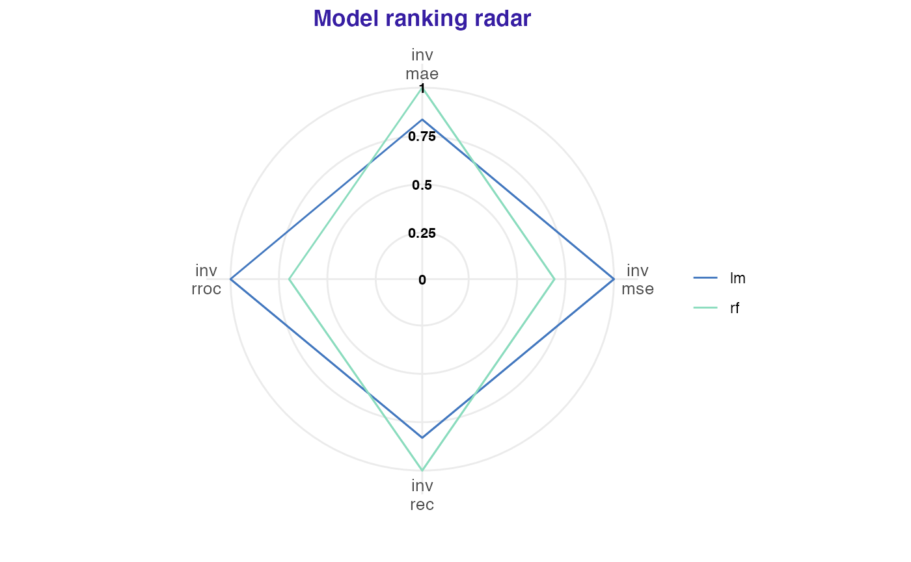

vignettes/model_performance_audit.Rmd
model_performance_audit.RmdTo illustrate application of auditor we will use dataset “dragons” available in the DALEX package. The dataset contains characteristics of fictional creatures (dragons), like year of birth, height, weight, etc (see below). The goal is to predict the length of life of dragons (a regression problem).
## year_of_birth height weight scars colour year_of_discovery
## 1 -1291 59.40365 15.32391 7 red 1700
## 2 1589 46.21374 11.80819 5 red 1700
## 3 1528 49.17233 13.34482 6 red 1700
## 4 1645 48.29177 13.27427 5 green 1700
## 5 -8 49.99679 13.08757 1 red 1700
## 6 915 45.40876 11.48717 2 red 1700
## number_of_lost_teeth life_length
## 1 25 1368.4331
## 2 28 1377.0474
## 3 38 1603.9632
## 4 33 1434.4222
## 5 18 985.4905
## 6 20 969.5682First, we need models to compare. We selected linear regression and random forest because of their different structures. Linear regression model linear relationships between target response and independent variables. While random forest should be able to capture also non-linear relationships between variables.
# Linear regression
lm_model <- lm(life_length ~ ., data = dragons)
# Random forest
library(randomForest)
set.seed(59)
rf_model <- randomForest(life_length ~ ., data = dragons)Analysis begins with creation of an explainer object with explain function from DALEX package. Explainer wraps a model with its meta-data, such as dataset that was used for training or observed response.
lm_exp <- DALEX::explain(lm_model, label = "lm", data = dragons, y = dragons$life_length)
rf_exp <- DALEX::explain(rf_model, label = "rf", data = dragons, y = dragons$life_length)Next step requires creation of model_performance objects of each explained model. The function computes chosen performance measures for passed model.
library(auditor)
lm_mp <- model_performance(lm_exp)
rf_mp <- model_performance(rf_exp)
lm_mp## Model label: lm
## score name
## mae 3.334652e+01 mae
## mse 1.656454e+03 mse
## rec 3.330139e+01 rec
## rroc 3.310782e+09 rrocModel performance measures may be plotted together to easily compare model performances. A result further from the center of the plot means a better model performance. Parameter verbose indicates whether the table with scores should be generated. On the plot scores are inversed and scaled to [0,1].
plot(lm_mp, rf_mp)## name label value scaled
## 1 mae lm 3.33e+01 1.000
## 2 mae rf 2.79e+01 0.835
## 3 mse lm 1.66e+03 1.000
## 4 mse rf 2.39e+03 1.443
## 5 rec lm 3.33e+01 1.000
## 6 rec rf 2.77e+01 0.831
## 7 rroc lm 3.31e+09 1.000
## 8 rroc rf 4.75e+09 1.434
# alternative:
# plot_radar(lm_mp, rf_mp, verbose = FALSE)There is a possibility to define functions with custom model performance measure.
new_score <- function(object) sum(sqrt(abs(object$residuals)))
lm_mp <- model_performance(lm_exp,
score = c("mae", "mse", "rec", "rroc"),
new_score = new_score)
rf_mp <- model_performance(rf_exp,
score = c("mae", "mse", "rec", "rroc"),
new_score = new_score)
plot(lm_mp, rf_mp)## name label value scaled
## 1 mae lm 3.33e+01 1.000
## 2 mae rf 2.79e+01 0.835
## 3 mse lm 1.66e+03 1.000
## 4 mse rf 2.39e+03 1.443
## 5 rec lm 3.33e+01 1.000
## 6 rec rf 2.77e+01 0.831
## 7 rroc lm 3.31e+09 1.000
## 8 rroc rf 4.75e+09 1.434
## 9 new_score lm 1.07e+04 1.000
## 10 new_score rf 9.25e+03 0.864